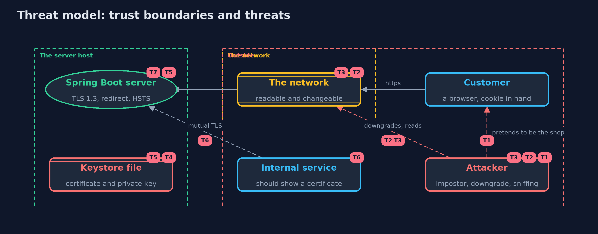

Threat Model — An HTTPS Server with Spring Boot
A threat model answers four questions: what are we protecting, who or what could harm it, how, and what do we do about it. This one covers this project's own demo system, not a production deployment. Domain: an online store.
Scope
A Spring Boot web server for an online store, terminating TLS itself: its SSL bundle and keystore file, the plain HTTP port that redirects, the HSTS header and session cookie, certificate renewal, and an internal service that connects with a client certificate. It covers an attacker on the network and an attacker who impersonates the shop. It does not cover the application's own logic, a reverse proxy, or the operating system.
What we protect (assets)
- Customers' traffic and session cookies.
- The server's private key and the keystore file.
- The shop's availability, which depends on a valid certificate.
- The internal service's access to the shop.
Who and what acts on the system
- Customers using browsers.
- An attacker on the network path.
- An attacker who runs a server with the shop's name.
- An internal service that calls the shop.
- An operator who renews certificates.
Trust boundaries
A trust boundary is a line that data or a request crosses between parts that trust each other differently. Threats cluster where those lines are.
- Internet to the HTTPS port: everything crossing it is protected by TLS.
- Internet to the plain port: nothing is protected, and the port only redirects.
- Keystore file to the server process: the file is readable by the server, so by anyone who gets that access.

Each dashed box is a trust boundary. A rose tag such as T1 shows where the threat of that number, in the table below, applies.
Threats, using STRIDE
STRIDE is a checklist of six kinds of threat: Spoofing (S), Tampering (T), Repudiation (R), Information disclosure (I), Denial of service (D), Elevation of privilege (E).
| Id | Kind | Threat | Where it shows up | Control in this project | What is left |
|---|---|---|---|---|---|
| T1 | Spoofing | A server with the shop's name but a certificate nobody trusts impersonates the shop | ShopClient, the trust bundle |
The client trusts only the demo root and checks the host name | A stolen or wrongly issued certificate from a trusted authority still passes |
| T2 | Tampering | An attacker forces an old TLS version or plain HTTP | the shop bundle, ShopApp.chain |
TLS 1.3 only, a redirect from the plain port, and HSTS | A first visit before the browser has seen HSTS can still start on plain HTTP, which preload lists address |
| T3 | Information disclosure | A session cookie is read from the network or sent over plain HTTP | the session cookie settings | Secure, HttpOnly and SameSite=Strict | A cross-site scripting hole in the application would still reach the page's data |
| T4 | Information disclosure | The private key is read from the keystore file | shop.p12 |
File permissions on the folder and a password on the keystore | The server must read the file, so a key management service or hardware module is stronger |
| T5 | Denial of service | The certificate expires, or a renewal is mishandled, and customers cannot connect | the bundle's reload setting | Reload on update, so a renewed file is served without a restart | Someone must obtain the new certificate in time, and a bad file could break the reload, so monitor expiry |
| T6 | Spoofing | An unauthorised client calls an internal endpoint | server.ssl.client-auth=need |
Mutual TLS: only a certificate signed by the trusted root is accepted | It identifies a machine, not a person, and a stolen client key works until the certificate expires |
| T7 | Information disclosure | Error pages, headers or extra endpoints reveal internal details | ShopApp, the defaults |
No actuator on the class path, error messages off, and no Server header | A custom error handler or an extra dependency could bring these back, so test from outside |
Assumptions
- The root certificate authority is trusted and its key is safe.
- Clients check the certificate and the host name, as browsers and java.net.http do.
- In the demo, the host name comes from a hosts file, and the keys and password are demo values.
Out of scope
- Reverse proxies, load balancers and service meshes.
- Certificate authorities, ACME and revocation: see the certificates project.
- User authentication and authorization on top of TLS.
How the tests check this
CertificatesTestchecks that the two server certificates differ, name the host, and chain to the demo root, and that the impostor and the client certificates are what they claim.HttpsSpringTeststarts real servers and checks TLS 1.3, every refusal, the redirect and HSTS, the cookie flags, renewal with and without reload, mutual TLS, and the error page and actuator.DemoRunsTestcompares the whole demo with the golden output.
Where this model goes next
The next module, safe-habits, looks at what keeps a system safe over time: least privilege, patching and backups.